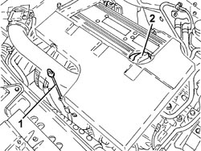

0010T11 ENGINE OIL - CHECK LEVEL AND TOP UP, IF NECESSARY
- Path
- Procedures > 00 MAINTENANCE > 0010 NEW VEHICLES AND MAINTENANCE > 0010T VEHICLE FLUIDS > 0010T11 ENGINE OIL - CHECK LEVEL AND TOP UP, IF NECESSARY
- Kind
- repair procedure (removal / refitting; the operation number is the code)
- Applies to
- all engines; all production periods
- Interactive page
- https://sloeber94.github.io/elrnDB-fCrm/en/#/194000214
Applies to: engines: 2.2; all production periods
1. Extract the engine oil dipstick, clean it and then fully reinset it, extract it and check that the level is between the MIN and MAX marks on the actual dipstick.
2. If the oil level is close to or actually below the MIN mark, introduce the recommended oil through the filler until it reaches the MAX mark.
Component | Type | Description | Classification | Qty. | Validity |
|---|---|---|---|---|---|
ENGINE LUBRICATION SYSTEM | Oil | SELENIA PERFORMER MULTIPOWER | SAE 5W-30 - FIAT 9.55535-G1 - ACEA A3/B3 | 5.0 litres | 2.2 |
- For the use of the vehicle in particularly severe climate conditions it is advisable to use the recommended oil for the engine lubrication circuit.
Component | Type | Description | Classification | Qty. | Validity |
|---|---|---|---|---|---|
ENGINE LUBRICATION SYSTEM | Oil | SELENIA DIGITECH | SAE 0W-30 | 5.0 litres | 2.2 |

Applies to: engines: 1.9 JTD 8v, 1.9 JTD 16v; all production periods
- Extract the engine oil dipstick, clean it and then fully reinset it, extract it and check that the level is between the MIN and MAX marks on the actual dipstick.
- If the oil level is close to or actually below the MIN mark, introduce the recommended oil through the filler until it reaches the MAX mark.
Component | Type | Description | Classification | Qty. | Validity |
|---|---|---|---|---|---|
ENGINE LUBRICATION SYSTEM | Oil | SELENIA WR | SAE 5W-40 - FIAT 9.555535-M2 | 4.5 litres | 1.9 JTD 8V 1.9 JTD 16V |
Applies to: engines: 2.4 JTD 20v; all production periods
- Extract the engine oil dipstick, clean it and then fully reinset it, extract it and check that the level is between the MIN and MAX marks on the actual dipstick.
- If the oil level is close to or actually below the MIN mark, introduce the recommended oil through the filler until it reaches the MAX mark.
Component | Type | Description | Classification | Qty. | Validity |
|---|---|---|---|---|---|
ENGINE LUBRICATION SYSTEM | Oil | SELENIA WR | SAE 5W-40 - FIAT 9.555535-M2 | 5.4 litres | 2.4 JTD 20V |
Applies to: engines: 1.8; all production periods
- Extract the engine oil dipstick, clean it and then fully reinset it, extract it and check that the level is between the MIN and MAX marks on the actual dipstick.
- If the oil level is close to or actually below the MIN mark, introduce the recommended oil through the filler until it reaches the MAX mark.
Component | Type | Description | Classification | Qty. | Validity |
|---|---|---|---|---|---|
ENGINE LUBRICATION SYSTEM | Oil | SELENIA PERFORMER MULTIPOWER | SAE 5W-30 - FIAT 9.55535-G1 - ACEA A3/B3 | 4.5 litres | 1.8 |
Topics that link to this page (46)
- B013 ENGINE STARTS WITH DIFFICULTY
- B015 ENGINE DOES NOT START (STARTER MOTOR WORKING)
- D003 ENGINE NOT RUNNING SMOOTHLY / (IRREGULAR OPERATION)
- D004 ENGINE NOT RUNNING SMOOTHLY
- D005 ENGINE DOES NOT PRODUCE BEST PERFORMANCE
- D009 ENGINE NOT FEELING ACCELERATOR PEDAL PRESSURE
- D010 ENGINE IDLE IRREGULAR
- D014 ENGINE GOING OFF ON IDLING (THEN RESTARTING)
- D015 POOR CHANGE IN ENGINE SPEED ON PRESSING ACCELERATOR PEDAL
- D016 POOR ENGINE RESPONSE
- D020 ENGINE CUTS OUT WHILST RUNNING (THEN NOT RESTARTING)
- D021 ENGINE CUTS OUT WHILST RUNNING (THEN RESTARTS)
- S003 ENGINE KNOCKING
- W005 WHITE EXHAUST FUMES
- W010 BLACK EXHAUST FUMES
- W011 EXCESSIVE EXHAUST FUMES
- X004 ENGINE OIL LEVEL TOO HIGH
- X011 LEAKS IN FUEL FEED SYSTEM
- Y004 P0100 - DEBIMETER (BEYOND UPPER LIMIT)
- Y005 P0100 - DEBIMETER (BELOW LOWER LIMIT)
- Y007 P0168 - LIMITATION FOR HIGH FUEL TEMPERATURE
- Y023 P0234 - TURBO PRESSURE
- Y039 P0401 - EGR VALVE
- Y100 P0101 - DEBIMETER SIGNAL (BEYOND UPPER LIMIT)
- Y104 P0237 - TURBO PRESSURE
- Y105 P0238 - TURBO PRESSURE
- 1020A20 CRANKCASE OIL SUMP - R.R CLEAN SURFACES FOR SEALANT APPLICATION
- 1020A30 ENGINE OIL DRAIN PLUG - REPLACE
- 1020D10 FRONT CRANKSHAFT OIL SEAL COVER - R + R AND REPLACE SEALS WITH TIMING BELT REMOVED
- 1028H10 CONNECTING ROD AND PISTON SET - R.R
- 1028H20 PISTON WITH CONNECTING ROD - R.R
- 1032A10 CHAIN GEARS AND TIMING SYSTEM COMPONENTS R R
- 1032A12 TIMING SYSTEM DRIVE CHAIN - R.R
- 1084A40 ENGINE OIL LEVEL SENSOR - R + R
- 1084B26 ENGINE OIL INTAKE DUCT - R.R
- 1084B30 ENGINE OIL FILTER - R.R
- 1084B45 TIMING CHAIN LUBRICATION NOZZLE - R.R
- 1084B34 CARTRIDGE ENGINE OIL FILTER SUPPORT - R + R
- 1084B36 ENGINE OIL FILTER MOUNTING AND HEAT EXCHANGER - R.R
- 1084C10 ENGINE OIL HEAT EXCHANGER - R + R
- 1084C34 ENGINE OIL COOLING RADIATOR - R + R
- 1084C38 ENGINE OIL DELIVERY AND RETURN PIPES TO COOLING RADIATOR - R + R
- 1088C21 <x>WATER PUMP DRIVE GEAR - R&R</x>
- 1092B91 WATER PUMP BALANCING SHAFT DRIVE CHAIN GEARS AND COMPONENTS R R
- 1092B92 WATER PUMP /BALANCING SHAFT DRIVE CHAIN HYDRAULIC TENSIONER R R
- 1092B93 WATER PUMP /BALANCING SHAFT DRIVE CHAIN TENSIONER PADS R R